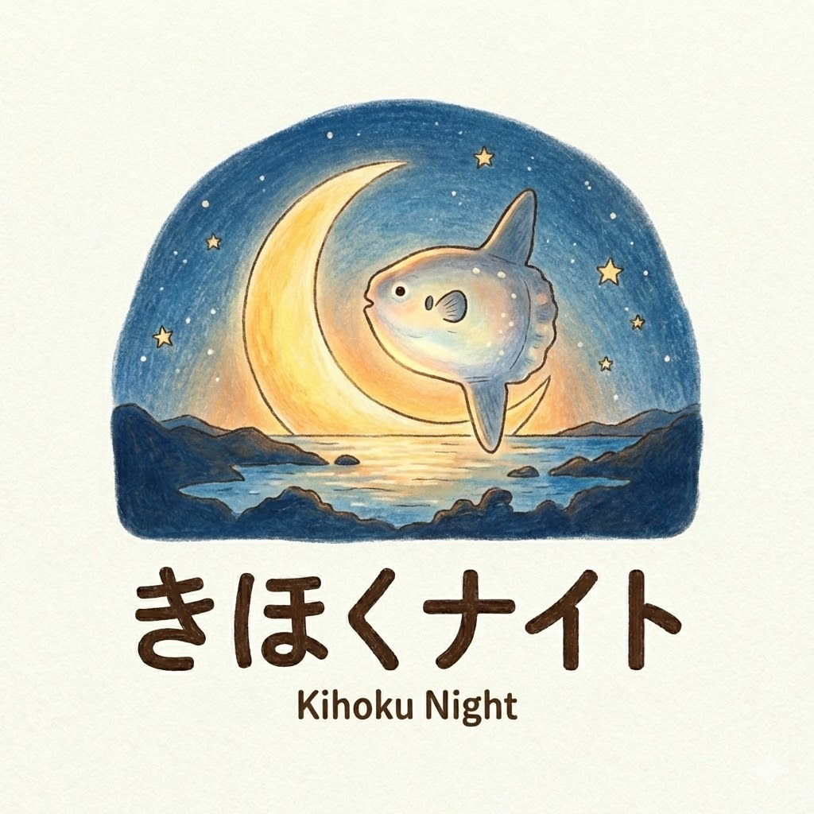

きほくナイト Vol.5
ふたつの流域のお米を味わいながら、
土地と人を知る夜。
「自分と地域をちょっと良くする、若者のゆるい集いの場」
行政の枠も、仕事の肩書きも、ちょっと横に置いて、若者が数ヶ月に一度集まる「ゆるい集いの場」です。成功体験も地域の「どうする？」も持ち寄って、対話の中で混ぜ合わせる。きほくナイトを通じて、地域や人とつながったり、仕事やアイディアのヒントになるきっかけになればと思い始めました。
専門性はリスペクトしつつ、立場の壁を越えてフラットに語る。
カッコいい「できた！」も、泥臭い「困った」も、みんなの学びに変える。
自分の町、自分の業種の外側にこそ、ブレイクスルーの鍵がある。境界を越える刺激を楽しむ。
紀北町には、赤羽川と銚子川という二つの流域があります。今回のきほくナイトでは、それぞれの地域で作られたお米を味わいます。
でも、どちらがおいしいかを決める会ではありません。
まずは、どこのお米かを知らずに味わってみます。そのあとで、土地や作り手のことを知って、もう一度味わってみます。
知る前と、知ったあと。
同じ一杯のごはんでも、少し感じ方が変わるかもしれません。
お米を入口に、紀北町の土地、人、暮らしを少し知る夜です。
※夕食会ではなく、お米を少量ずつ味わいながら、対話を楽しむ企画です。
Googleフォームに遷移します。予約制・最大12名。
赤羽川・銚子川のどちらのお米かを伏せた状態で味わいます。
どちらが上かを決めるのではなく、それぞれの特徴や感じたことを自由に話します。
どこで、誰が作っているお米なのかを紹介します。
地図や写真などを使いながら、赤羽川と銚子川、それぞれの土地や作り手について知ります。
参加者が持ってきたごはんのお供や、まちライブラリー＠きほくで用意したお茶、味噌汁、ごはんのお供と一緒に、もう一度お米を味わいます。
お米の良いところ、合いそうな料理、面白い提供方法、見せ方、売り方、伝え方などを自由に話します。
出た感想やアイデアは、米農家さんにもフィードバックする予定です。
参加する方には、できる限り、自分が食べる分の「ごはんのお供」をひとつ持ってきてもらえるとうれしいです。準備が難しい場合は、手ぶらでも大丈夫です。
特別なものや高価なものでなくて大丈夫です。普段食べているもの、好きなものを、自分の分だけ。
まちライブラリー＠きほく からも、
お茶、味噌汁、ごはんのお供1品をご用意します。
それぞれの好きなものや暮らしを少しずつ持ち寄って、
同じ食卓を囲みましょう。
正解を当てる食べ比べではありません。
感じたことを持ち寄りながら、
お米の向こう側にある土地や人のことも少し知ってみます。
食べながら、思いついたことを気軽に。
みんなで見つけた魅力は、米農家さんにも届けます。